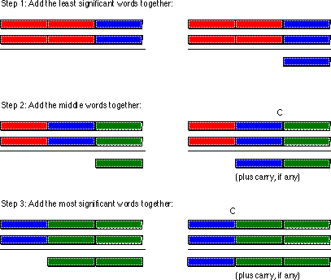

|
Table of Content | Chapter Nine (Part 4) |
|
Table of Content | Chapter Nine (Part 4) |
| CHAPTER NINE: ARITHMETIC AND LOGICAL OPERATIONS (Part 3) |
| 9.3 -
Multiprecision Operations 9.3.1 - Multiprecision Addition Operations 9.3.2 - Multiprecision Subtraction Operations 9.3.3 - Extended Precision Comparisons |
9.3 Multiprecision Operations |
One big advantage of assembly language over HLLs is that
assembly language does not limit the size of integers. For example, the C programming
language defines a maximum of three different integer sizes: short int, int,
and long int. On the PC, these are often 16 or 32 bit integers. Although the
80x86 machine instructions limit you to processing eight, sixteen, or thirty-two bit
integers with a single instruction, you can always use more than one instruction to
process integers of any size you desire. If you want 256 bit integer values, no problem.
The following sections describe how extended various arithmetic and logical operations
from 16 or 32 bits to as many bits as you please.
9.3.1 Multiprecision Addition Operations
The 80x86 add instruction adds two 8, 16, or
32 bit numbers[1]. After the execution of the add instruction,
the 80x86 carry flag is set if there is an overflow out of the H.O. bit of the sum. You
can use this information to do multiprecision addition operations. Consider the way you
manually perform a multidigit (multiprecision) addition operation:
Step 1: Add the least significant digits together:
289 289
+456 produces +456
---- ----
5 with carry 1.
Step 2: Add the next significant digits plus the carry:
1 (previous carry)
289 289
+456 produces +456
---- ----
5 45 with carry 1.
Step 3: Add the most significant digits plus the carry:
1 (previous carry)
289 289
+456 produces +456
---- ----
45 745
The 80x86 handles extended precision arithmetic in an identical fashion, except instead of adding the numbers a digit at a time, it adds them a byte or a word at a time. Consider the three-word (48 bit) addition operation shown below:

The add instruction adds the L.O. words
together. The adc (add with carry) instruction adds all other word pairs
together. The adc instruction adds two operands plus the carry flag together
producing a word value and (possibly) a carry.
For example, suppose that you have two thirty-two bit values you wish to add together, defined as follows:
X dword ? Y dword ?
Suppose, also, that you want to store the sum in a third
variable, Z, that is likewise defined with the dword directive. The following
80x86 code will accomplish this task:
mov ax, word ptr X
add ax, word ptr Y
mov word ptr Z, ax
mov ax, word ptr X+2
adc ax, word ptr Y+2
mov word ptr Z+2, ax
Remember, these variables are declared with the dword
directive. Therefore the assembler will not accept an instruction of the form mov
ax, X because this instruction would attempt to load a 32 bit value into a 16 bit
register. Therefore this code uses the word ptr coercion operator to coerce symbols X,
Y, and Z to 16 bits. The first three instructions add the L.O.
words of X and Y together and store the result at the L.O. word
of Z. The last three instructions add the H.O. words of X and Y
together, along with the carry out of the L.O. word, and store the result in the H.O. word
of Z. Remember, address expressions of the form "X+2" access the
H.O. word of a 32 bit entity. This is due to the fact that the 80x86 address space
addresses bytes and it takes two consecutive bytes to form a word.
Of course, if you have an 80386 or later processor you needn't go through all this just to add two 32 bit values together, since the 80386 directly supports 32 bit operations. However, if you wanted to add two 64 bit integers together on the 80386, you would still need to use this technique.
You can extend this to any number of bits by using the adc
instruction to add in the higher order words in the values. For example, to add together
two 128 bit values, you could use code that looks something like the following:
BigVal1 dword 0,0,0,0 ;Four double words in 128 bits!
BigVal2 dword 0,0,0,0
BigVal3 dword 0,0,0,0
.
.
.
mov eax, BigVal1 ;No need for dword ptr operator since
add eax, BigVal2 ; these are dword variables.
mov BigVal3, eax
mov eax, BigVal1+4 ;Add in the values from the L.O.
adc eax, BigVal2+4 ; entity to the H.O. entity using
mov BigVal3+4, eax ; the ADC instruction.
mov eax, BigVal1+8
adc eax, BigVal2+8
mov BigVal3+8, eax
mov eax, BigVal1+12
adc eax, BigVal2+12
mov BigVal3+12, eax
Like addition, the 80x86 performs multi-byte subtraction
the same way you would manually, except it subtracts whole bytes , words, or double words
at a time rather than decimal digits. The mechanism is similar to that for the add operation,
You use the sub instruction on the L.O. byte/word/double word and the sbb instruction on
the high order values. The following example demonstrates a 32 bit subtraction using the
16 bit registers on the 8086:
var1 dword ?
var2 dword ?
diff dword ?
mov ax, word ptr var1
sub ax, word ptr var2
mov word ptr diff, ax
mov ax, word ptr var1+2
sbb ax, word ptr var2+2
mov word ptr diff+2, ax
The following example demonstrates a 128-bit subtraction using the 80386 32 bit register set:
BigVal1 dword 0,0,0,0 ;Four double words in 128 bits!
BigVal2 dword 0,0,0,0
BigVal3 dword 0,0,0,0
.
.
.
mov eax, BigVal1 ;No need for dword ptr operator since
sub eax, BigVal2 ; these are dword variables.
mov BigVal3, eax
mov eax, BigVal1+4 ;Subtract the values from the L.O.
sbb eax, BigVal2+4 ; entity to the H.O. entity using
mov BigVal3+4, eax ; the SUB and SBB instructions.
mov eax, BigVal1+8
sbb eax, BigVal2+8
mov BigVal3+8, eax
mov eax, BigVal1+12
sbb eax, BigVal2+12
mov BigVal3+12, eax
Unfortunately, there isn't a "compare with
borrow" instruction that can be used to perform extended precision comparisons. Since
the cmp and sub instructions perform the same operation, at
least as far as the flags are concerned, you'd probably guess that you could use the sbb
instruction to synthesize an extended precision comparison; however, you'd only be
partly right. There is, however, a better way.
Consider the two unsigned values 2157h and 1293h. The L.O. bytes of these two values do not affect the outcome of the comparison. Simply comparing 21h with 12h tells us that the first value is greater than the second. In fact, the only time you ever need to look at both bytes of these values is if the H.O. bytes are equal. In all other cases comparing the H.O. bytes tells you everything you need to know about the values. Of course, this is true for any number of bytes, not just two. The following code compares two signed 64 bit integers on an 80386 or later processor:
; This sequence transfers control to location "IsGreater" if
; QwordValue > QwordValue2. It transfers control to "IsLess" if
; QwordValue < QwordValue2. It falls though to the instruction
; following this sequence if QwordValue = QwordValue2. To test for
; inequality, change the "IsGreater" and "IsLess" operands to "NotEqual"
; in this code.
mov eax, dword ptr QWordValue+4 ;Get H.O. dword
cmp eax, dword ptr QWordValue2+4
jg IsGreater
jl IsLess
mov eax, dword ptr QWordValue
cmp eax, dword ptr QWordValue2
jg IsGreater
jl IsLess
To compare unsigned values, simply use the ja and jb instructions in place of jg and jl.
You can easily synthesize any possible comparison from the sequence above, the following examples show how to do this. These examples do signed comparisons, substitute ja, jae, jb, and jbe for jg, jge, jl, and jle (respectively) to do unsigned comparisons.
QW1 qword ?
QW2 qword ?
dp textequ <dword ptr>
; 64 bit test to see if QW1 < QW2 (signed).
; Control transfers to "IsLess" label if QW1 < QW2. Control falls
; through to the next statement if this is not true.
mov eax, dp QW1+4 ;Get H.O. dword
cmp eax, dp QW2+4
jg NotLess
jl IsLess
mov eax, dp QW1 ;Fall through to here if H.O.
cmp eax, dp QW2 ; dwords are equal.
jl IsLess
NotLess:
; 64 bit test to see if QW1 <= QW2 (signed).
mov eax, dp QW1+4 ;Get H.O. dword
cmp eax, dp QW2+4
jg NotLessEq
jl IsLessEq
mov eax, dp QW1
cmp eax, dword ptr QW2
jle IsLessEq
NotLessEQ:
; 64 bit test to see if QW1 >QW2 (signed).
mov eax, dp QW1+4 ;Get H.O. dword
cmp eax, dp QW2+4
jg IsGtr
jl NotGtr
mov eax, dp QW1 ;Fall through to here if H.O.
cmp eax, dp QW2 ; dwords are equal.
jg IsGtr
NotGtr:
; 64 bit test to see if QW1 >= QW2 (signed).
mov eax, dp QW1+4 ;Get H.O. dword
cmp eax, dp QW2+4
jg IsGtrEq
jl NotGtrEq
mov eax, dp QW1
cmp eax, dword ptr QW2
jge IsGtrEq
NotGtrEq:
; 64 bit test to see if QW1 = QW2 (signed or unsigned). This code branches
; to the label "IsEqual" if QW1 = QW2. It falls through to the next instruction
; if they are not equal.
mov eax, dp QW1+4 ;Get H.O. dword
cmp eax, dp QW2+4
jne NotEqual
mov eax, dp QW1
cmp eax, dword ptr QW2
je IsEqual
NotEqual:
; 64 bit test to see if QW1 <> QW2 (signed or unsigned). This code branches
; to the label "NotEqual" if QW1 <> QW2. It falls through to the next
; instruction if they are equal.
mov eax, dp QW1+4 ;Get H.O. dword
cmp eax, dp QW2+4
jne NotEqual
mov eax, dp QW1
cmp eax, dword ptr QW2
jne NotEqual
[1] As usual, 32 bit arithmetic is available only on the 80386 and later processors.
|
Table of Content | Chapter Nine (Part 4) |
Chapter Nine: Arithmetic And Logical
Operations (Part 3)
27 SEP 1996